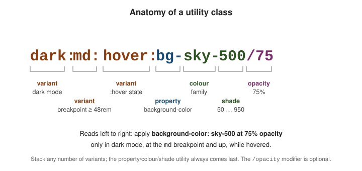

Utility-First Fundamentals
|
This content was generated with the assistance of AI and should be verified against the official documentation before being relied on in production. |
Tailwind’s core workflow is styling with utility classes: instead of writing CSS rules, you apply many small classes to each element. This page explains what a utility class actually is, why it is preferred over inline styles, how to keep the markup from repeating itself, and how variant prefixes stack into one class.
Tailwind is, at its core, multiple classes per element: each class contributes one declaration (or a small group), and an element’s look is the sum of its classes. See Elements with multiple classes.
What a utility class is
A utility class is a thin wrapper around a single CSS declaration. m-4 generates margin: calc(var(--spacing)
* 4) — 1rem, because the theme’s --spacing variable is 0.25rem and the numeric scale multiplies it (so
1 = 0.25rem, 4 = 1rem, 8 = 2rem). A few utilities set a small coordinated group of declarations — text-lg sets both a font-size and a matching line-height — but the rule of thumb holds: one class, one
intent.
<div class="mt-4 mb-8 text-lg font-medium text-slate-700">
<!-- mt-4 -> margin-top: 1rem (4 x 0.25rem) -->
<!-- mb-8 -> margin-bottom: 2rem (8 x 0.25rem) -->
<!-- text-lg -> font-size: 1.125rem; line-height: 1.75rem -->
Spacing and type pulled from the theme scale
</div>/* what the utilities above compile to */
.mt-4 { margin-top: calc(var(--spacing) * 4); } /* --spacing: 0.25rem -> 1rem */
.text-lg { font-size: var(--text-lg); line-height: var(--text-lg--line-height); }Why not inline styles
You could write style="margin-top: 1rem". Utilities win for four reasons, covered in the docs under
Why not just use inline
styles?:
-
Design constraints. Utilities draw from your theme, so you pick from a curated set of spacing, colour, and type values instead of arbitrary numbers — the design stays consistent.
-
States and media queries. An inline
styleattribute cannot expresshover:,focus:,md:, ordark:. Utilities can. -
Shorter, consistent values.
pt-4rather thanpadding-top: 1rem, spelled the same way everywhere. -
Responsive by prefix.
md:flexneeds no separate stylesheet or@mediablock.
<!-- inline style: no hover, no breakpoint, arbitrary value -->
<a style="background-color:#0284c7;padding:8px 16px">Link</a>
<!-- utilities: themed value, hover state, responsive padding -->
<a class="bg-sky-600 px-4 py-2 hover:bg-sky-500 md:px-6">Link</a>Conflicting utilities
Two utilities that set the same property conflict: in class="p-2 p-4" the rule that appears later in the
generated CSS wins, and the order of the classes in the attribute is irrelevant. Avoid writing conflicts. When
classes are composed dynamically, use clsx to build the list and tailwind-merge to drop the losing
utility. See Class order and the cascade.
Managing duplication
When the same class list repeats, reach for these in order — cheapest and most maintainable first:
-
Loop in the template. Render the repeated markup from an array; the class list is written once.
-
Extract a component. A React / Vue / Svelte component, a Blazor component, or a server-side partial — one definition, real parameters.
-
Multi-cursor edit. For a one-off repeat in a single file, select every occurrence and edit them together.
-
Custom CSS as a last resort. Only when none of the above fit.
<!-- 1. loop in the template (Handlebars) -->
<nav>
{{#each navItems}}
<a href="{{this.href}}"
class="rounded px-3 py-2 text-sm font-medium hover:bg-slate-100">
{{this.label}}
</a>
{{/each}}
</nav>// 2. extract a component -- the class list is defined exactly once
function NavLink({ href, children }) {
return (
<a href={href}
className="rounded px-3 py-2 text-sm font-medium hover:bg-slate-100">
{children}
</a>
)
}Prefer components over @apply. Tailwind offers @apply to inline a utility list into a custom CSS rule, but
it recreates the very indirection utilities remove — a class name whose meaning now lives in another file. Use
a template loop or a component instead, and keep @apply for the unavoidable cases such as styling third-party
markup you cannot add classes to. This is the opposite of the preprocessor-mixin habit: see
Sass for how @mixin / @include and @extend address reuse when you do own the
stylesheet.
States, responsive, and dark mode at a glance
Every variant is a prefix on a utility, and prefixes stack. The mental model is simple: name the state, then name the utility it changes.
<button class="bg-sky-600 hover:bg-sky-500 focus:outline-2
md:text-lg dark:bg-sky-400 dark:hover:bg-sky-300">
Prefixes stack left to right
</button>-
hover:,focus:, and dozens more interaction and structural states — detailed on States and Variants. Full list: Hover, focus, and other states — Quick reference. -
sm:md:lg:xl:2xl:breakpoint prefixes, applied mobile-first — detailed on Responsive Design. -
dark:for dark colour schemes — detailed on Dark Mode.
Reading a utility page’s Quick reference table. Each utility page in
the Tailwind docs opens with a Quick reference
table: the left column is the class name (p-4, px-2, pt-8), the right column is the exact CSS it generates
(padding: 1rem). Scan it to find the class for the value you want, then add whatever variant prefixes the
situation calls for.
Anatomy of a utility class

Read a fully-loaded class left to right:
-
dark:— a variant: apply only when the dark colour scheme is active. -
md:— a variant: apply only at themdbreakpoint and up (viewport >= 48rem). -
hover:— a variant: apply only while the pointer hovers the element. -
bg— the property:background-color. -
sky-500— the colour and shade from the theme palette. -
/75— the opacity modifier: 75% opaque, produced withcolor-mix().
All the conditions combine: the element gets a 75%-opacity sky background only when hovered, at md width or
wider, in dark mode. See Styling with utility
classes.
Worked example: taking the Acme card apart
The card from the running example (see Building a Page with Utilities) is a good specimen because it uses a base utility, a hover state and a dark-mode state in one class list:
<article class="rounded-xl border border-gray-200 p-6 hover:shadow-md dark:border-slate-800 dark:bg-slate-800/50">
<h3 class="font-semibold">Fast</h3>
<p class="mt-2 text-sm text-gray-600">Only the CSS you use is generated.</p>
</article>Each class contributes one rule. Compiling just the card with the CLI (theme and utilities only) produces the following, which is the whole story of what those seven classes mean. Plain classes become plain rules; every variant wraps the same declaration in a condition, and nothing outside the card’s class list is emitted:
@layer utilities {
.rounded-xl { border-radius: var(--radius-xl); } /* 0.75rem */
.border { border-style: var(--tw-border-style); border-width: 1px; }
.border-gray-200 { border-color: var(--color-gray-200); }
.p-6 { padding: calc(var(--spacing) * 6); } /* 1.5rem */
@media (hover: hover) {
.hover\:shadow-md:hover { box-shadow: /* two-layer medium shadow */; }
}
@media (prefers-color-scheme: dark) {
.dark\:border-slate-800 { border-color: var(--color-slate-800); }
.dark\:bg-slate-800\/50 {
background-color: color-mix(in oklab, var(--color-slate-800) 50%, transparent);
}
}
}Three details are worth noticing. The escaped slash and colon in the selectors (hover\:shadow-md) are just how
CSS spells a class name that contains : and /. The hover: rule is wrapped in @media (hover: hover), so on
a touch screen, where there is no real hover, the card does not get a sticky shadow after a tap. And the
bg-slate-800/50 opacity modifier compiles to color-mix(), which is why the colour keeps working with any theme
colour, including your own.
Because all of these rules live in the utilities layer with the same specificity (one class, or one class plus
:hover), the order of classes in the attribute does not matter; the order of rules in the generated stylesheet
does. Tailwind sorts that stylesheet so that a state or breakpoint variant comes after the plain utility it
overrides, which is what makes p-2 md:p-4 behave as you expect.
Thinking in utilities
A habit that helps when you start: do not translate a design into a component name, translate it into a list of decisions, each of which is one class. For the Acme card the design reads "rounded corners, thin light border, generous inner space, lift on hover, a dim fill in dark mode", and the class list is that sentence in the order you would say it. If a decision has no matching class, the theme is missing a value (see Theme Variables and Colors) or you want an arbitrary one (see Custom Styles and Arbitrary Values); you rarely need a new CSS rule.
Units and the scale
Most utilities take their size from the theme, and the theme stores sizes in rem. The consequence is that the
whole interface scales with the root font size: a user who raises their browser’s default text size from 16px to
20px gets p-4 as 20px, not 16px, and so does every other scale-based class. That is almost always what you want
for accessibility, and it is the reason to prefer scale values over px.
| Class | Generates | Unit |
|---|---|---|
|
|
|
|
|
percentage of the containing block |
|
|
the viewport; prefer |
|
|
|
|
|
an arbitrary value, written exactly as given |
|
|
borders are the one scale that stays in pixels |
Use an arbitrary value only when the design genuinely sits off the scale (w-[10px], top-[117px]), and prefer
the rem form (w-[0.625rem]) if it should follow the user’s text size. A full catalogue of how each family maps
to the scale is on Spacing and Sizing, and the underlying CSS units are covered in
HTML & CSS Reference.
Avoiding classes that fight
When two classes set the same property, the later rule wins, so a conditional style needs a variant rather than
a competing plain class. In a component that accepts a className, the usual failure is a caller passing p-8
to something that already has p-4; neither wins reliably. The cure is the pair mentioned above:
import clsx from 'clsx'
import { twMerge } from 'tailwind-merge'
// clsx joins conditional class names; twMerge removes the ones that lose to a later conflicting utility
export const cn = (...inputs) => twMerge(clsx(inputs))
function Card({ className, children }) {
return (
<article className={cn('rounded-xl border border-gray-200 p-6', className)}>
{children}
</article>
)
}
// <Card className="p-8"> renders "rounded-xl border border-gray-200 p-8"Related pages
-
Building a Page with Utilities — the Acme page this page takes apart one class at a time.
-
Hover, Focus, and Other States — every prefix usable in front of a utility.
-
Custom Styles and Arbitrary Values — arbitrary values and when
@applyis justified.